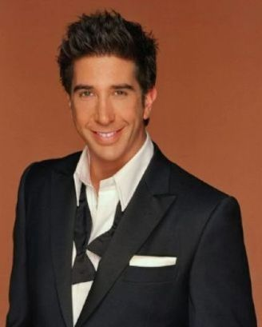

Ross Geller was born on October 18th, 1968, on Long Island, New York. He grew up with his parents and sister. He would go on to NYU to study paleontology to work at a Museum of Prehistoric History even became a college professor at NYU. He grew upp most of his early adult life in New York with a couple of friends who would all go on to have successful and great careers and lifestyles.
He recently got more into law and saw some trouble with the city. He saw that many people who are minorities or part of the LGBTQ group weren't given the best treatment. Such as his ex-wife, whose homophobic father wouldn't walk her down aslie on account of her itdenifying as a lesbian, or his siste,r who was mistreated a lot during her cooking job due to her replacing her old boss. All of his friends have faced many issues that are transpiring all over New York. So Mr. Geller would love to help out those who are suffering for thier rights as much as his close friends are.
CHECK OUT PRESIDENT GELLER'S WEBSITE!!!
Geller's campaign will consist of giving more people in the LGBTQ+ community more access to marriage venues and rights, along with more protection from abusive, homophobic people who do dangerous acts to fight for their rights against those they see as wrong. It'll also include more laws that'll help women who are suffering in the workplace, either from lower pay, mistreatment from other employees and bosses, or being given fewer opportunities due to their gender. He's planning to help many more people who are suffering in the state of New York cause he believes it can be a welcoming city for anybody.